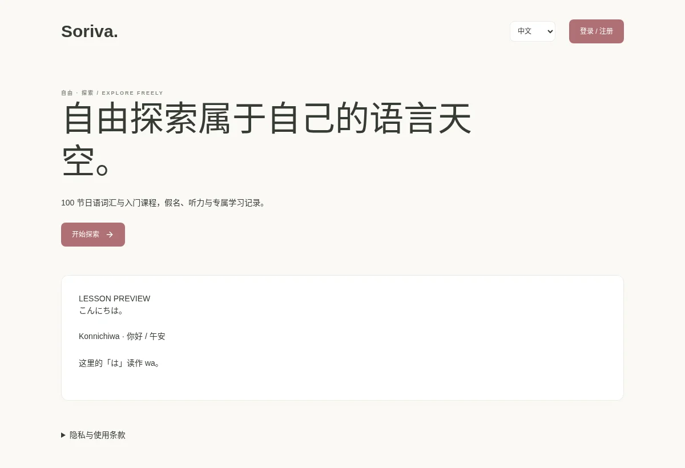

PROJECT NOTES
In developmentSoriva
A Japanese learning space with guided lessons, focused practice, and personal progress.
A closer look
Screenshot walkthrough: use the image below to explore the interface. A public interactive demo is not linked for this project.

What it does
- A structured learning path with kana and lesson practice.
- Daily practice and review of previous mistakes.
- Listening tools and account-based progress tracking.
Built with
Project status
The project documentation lists remaining release checks. This portfolio links to the source rather than exposing an authenticated learning workspace.
LESSONS FROM THE IMPLEMENTATION
Engineering notes
Study history and practice drafts need clear ownership so one account never inherits another account’s progress.
A polished learning interface still needs content, accessibility, and authenticated-flow acceptance checks.
Notes are based on the project source and documentation. Read the source